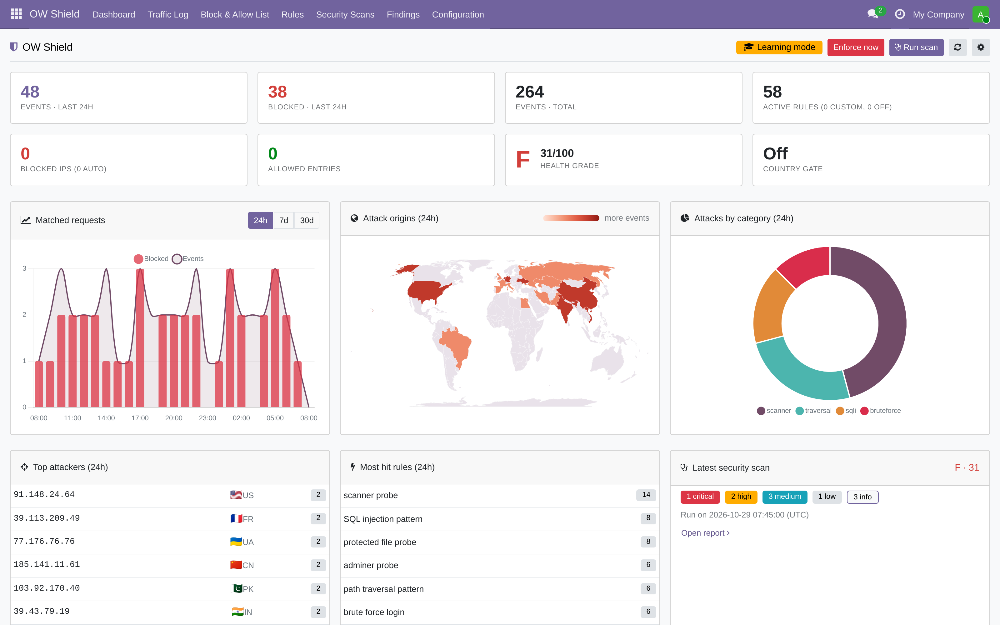
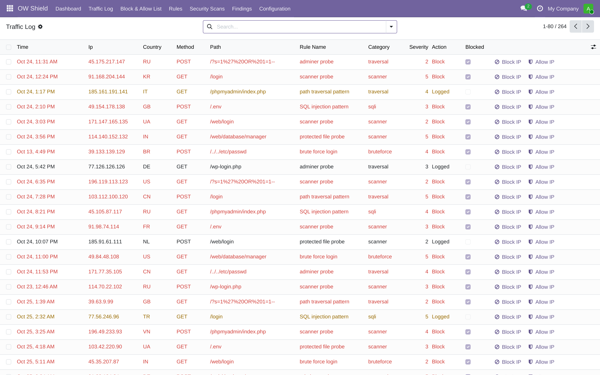
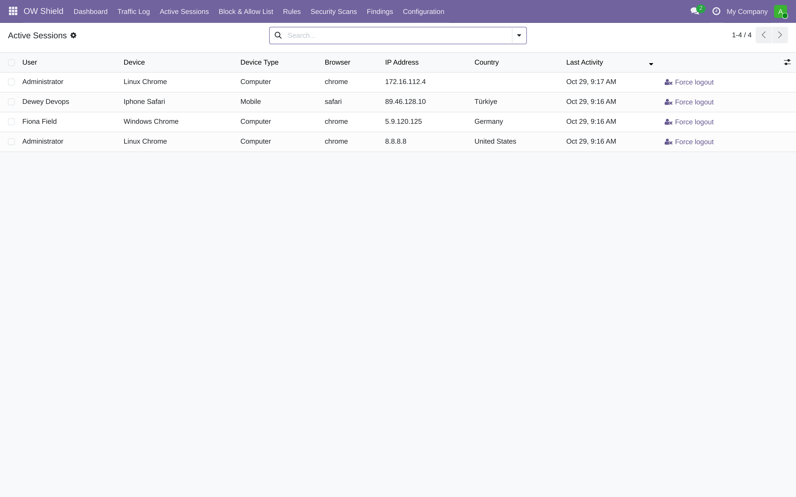
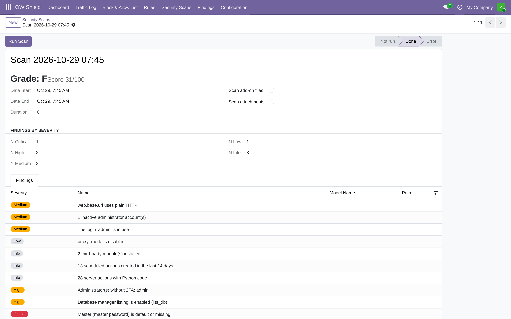
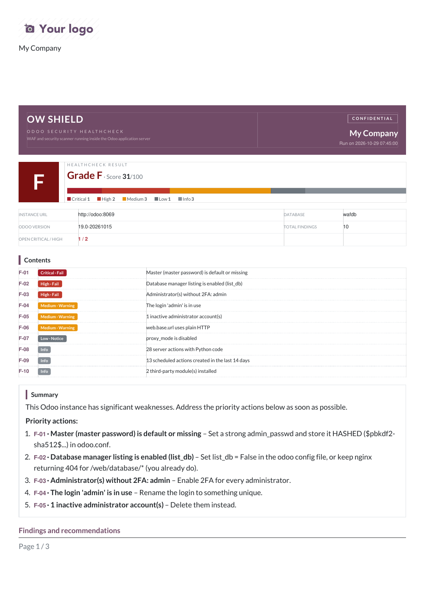
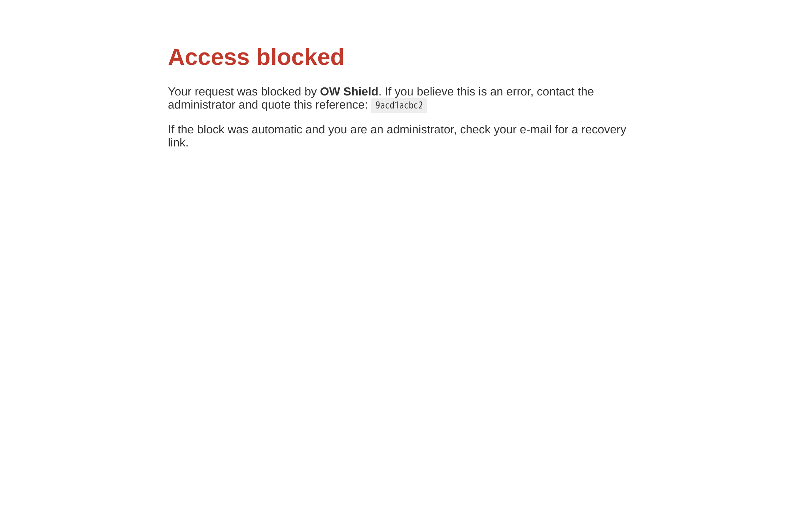

OW Shield — a real firewall for your Odoo, running inside Odoo.
Every request is inspected before it reaches Odoo's routing or ORM: attacks blocked by curated rules, attackers auto-banned with a recovery link so you can never lock yourself out, and your whole instance health-checked with an A–F grade and a shareable PDF report.

What it does.
OW Shield is a full web application firewall for Odoo Community and Enterprise. Instead of fragile
proxy rules that differ per host, Odoo itself enforces the firewall:
every request is inspected at the very entry point — before routing, controllers or the ORM — so
probes against login, the database manager, .env or unknown
paths never touch your data. Around that engine sit the things a security team actually needs:
a live traffic log with world map, IP and country controls, automatic lockouts, brute-force
protection, endpoint rate limits, active session control, and a read-only scanner that grades your instance and hands you a to-do list.
Everything a real WAF does — for Odoo.
Live traffic log & world map.
Every matched request is logged with IP, country flag, method, path, rule and severity. The dashboard adds a timeline, attacks by category, an origin world map and top-attacker/top-rule lists — with one-click Block IP from any row.
Curated Odoo-tuned rule pack.
67 bundled rules against SQL injection, XSS, SSTI (Jinja2/QWeb), path traversal, null bytes, Log4Shell & Shellshock (in any header), scanner user agents (sqlmap, Nikto, WPScan…) and probe paths (.env, .git, phpMyAdmin, database manager…). Every rule toggles and has a test-payload box.
Endpoint & rate policies.
Beyond attack signatures: whole route groups and RPC services (database manager, XML-RPC, JSON-RPC, the JSON view API) are matched from the parsed request — a business string that merely contains "db" cannot fire the database-service policy. Plus rate limits per IP, per user or per request target: signup and password-reset floods, report and list-export bursts. Counters are shared across all your worker processes.
Learning mode first.
New installs only log — never block. Watch a week of real traffic, tune the few rules that need it, then flip the switch to enforce. Ambiguous patterns stay log-only even in enforce mode, and log-only rules are labelled as such.
Auto-bans with a life raft.
A configured number of block-rule hits within a window bans the IP automatically — with an expiry. Banned admins e-mail themselves back in: each block mails a signed, time-limited recovery link. You can never lock yourself out.
IP & country controls.
CIDR allow and deny lists with reasons and expiry dates. Optional country allow/deny gating via a local MaxMind GeoLite2 database — and country attribution for the map works even when gating is off.
Login brute-force protection.
Per-IP failure counters on top of Odoo's login cooldown: too many failed logins in a window blocks the whole IP (with recovery e-mail), stopping password spraying at the front door.
Master-password brute-force protection.
Every confirmed failed master-password check — database manager, XML-RPC, JSON-RPC — counts against one instance-wide counter per source. Past the threshold, database management is refused to that source for a cooling-off period: never your website or backend access. With a signed recovery link and a one-click admin reset.
Active session control.
See who is logged in right now — user, device, browser, proxy-corrected IP and GeoIP country — and force-logout a hijacked session with one click. Optionally expire idle sessions automatically after a timeout you set.
Security scanner & grade.
A read-only audit of your instance: database manager exposure, master password, demo data, admin hygiene, 2FA coverage, proxy settings, server actions with code, and more — plus optional file and attachment scans. Findings with concrete fixes, a 0–100 score, A–F grade and a styled PDF report, on a weekly schedule.
It never takes your site down.
The firewall fails open: any internal error is logged and the request proceeds. Rules are evaluated against a cached snapshot — the per-request cost is microseconds — and everything runs in-process: no shell calls, no side daemons.
Same protection on every setup.
Behind nginx, a load balancer, PROXY protocol, Odoo.sh or plain Docker — the firewall runs where your Odoo runs, so the rules can never drift out of sync with your proxy configuration.
Spoof-proof client IPs.
Forwarded headers are honoured only from your configured trusted proxies. X-Forwarded-For forged from the internet is ignored, and bans land on the real attacker IP.
Before Odoo even routes.
Inspection happens at the WSGI entry point: probes against routes without a database, the database manager or unknown paths are answered with a block page — not a 404 trail.
Your rules, your call.
Toggle any bundled rule or endpoint policy, write your own with a live test box, and keep allow entries as a guaranteed escape hatch. Rule changes go live in seconds — no restart.
See it at work.
Know exactly what is happening.
The traffic log shows every matched request — country flags, rule, severity, and whether it was actually blocked — with Block IP and Allow IP one click away on each row.

Who is logged in right now.
The active sessions view lists every logged-in user with device, browser, IP (corrected through your proxy) and GeoIP country — and Force logout ends a suspicious session instantly, on the user's very next request. An optional idle timeout does it automatically.

Grade your instance.
One scan gives a grade, a score and findings by severity — each with the concrete fix, like set list_db = False in the odoo.conf. Schedule it weekly and watch the grade improve.

Hand the audit to your customer or colleague.
The PDF report bundles grade, findings, remediation checklist and the firewall posture at scan time — with your own logo on it.

What the attacker sees.
Blocked requests get a clean block page with a reference to quote. If the block was an automatic IP ban, your e-mail inbox gets a signed recovery link — the escape hatch is always in your hands, never the attacker's.

Up and running in three steps.
GeoLite2-Country.mmdb in Odoo's standard GeoIP path to light up the world map and country-based rules. Nothing else needs configuring: the log-pruning and weekly-scan crons are installed with the module.
Built to never break your site.
FAQ.
Which Odoo editions does it support?
Both: Odoo 19 Community and Enterprise. OW Shield depends only on base and mail, and needs no nginx rules, no separate daemon and no external service. One module, inside your existing Odoo.
Will it block my legitimate users?
That is what learning mode is for: you see what would be blocked before anything is. The rule pack is curated for Odoo's own traffic (including safe log-only rules for ambiguous patterns), every rule can be toggled, allow entries are absolute, and automatic IP bans come with an e-mailed recovery link and an expiry.
What is the performance impact?
Rules and lists live in a precompiled snapshot cache (refreshed within seconds of a config change), so a request pays one normalisation pass and a set of compiled regex matches — microseconds. Hit writes are buffered. And a firewall error never breaks the request: it fails open.
It runs inside Odoo — can't attackers bypass it?
Everything HTTP that reaches your application is inspected, before any routing — including requests against paths and endpoints that have no database. Attacks that bypass the WAF must bypass Odoo's own HTTP server entirely, which is exactly where nginx/CDN hardening comes in. OW Shield complements network hardening; it does not replace it.
Does it work behind nginx, a load balancer or Odoo.sh?
Yes — PROXY protocol, X-Forwarded-For and X-Real-IP chains all work. Tell OW Shield which proxy networks to trust and client IPs, the world map and bans all use the real visitor address, while forged headers from the internet are ignored.
Do I need a MaxMind subscription?
No. The firewall works completely without geolocation. Drop the free GeoLite2-Country database (Odoo's standard GeoIP path) into your server and the world map, country flags and country allow/deny rules light up automatically — the file never leaves your machine.
What does it cost?
Nothing. OW Shield is free and open source under LGPL-3, maintained by Openworx — an Odoo consultancy that runs this on its own production instances.